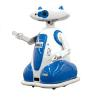

El robot limpiador
Descripción|  |
Para el problema de representación del robot limpiador, tenemos 9 habitaciones sucias en forma de matriz 3x3 y el robot tiene que limpiarlas una a una. |
El robot puede pasar de una habitación a otra a través de las puertas que hay en cada una de las paredes de las mismas, y tiene que limpiar todas en el mnor número de pasos.
RepresentaciónA partir de este enunciado hemos tomado como estado el lugar de Andalucía en el que nos encontramos en cada momento.
- Estado inicial: Todas las habitaciones sucias.
- Estado objetivo: Todas las habitaciones limpias.
A partir del estado inicial se crea el espacio de estados, aplicando una serie de operadores que hemos definido, basándonos en el enunciado:
- Clean "Limpia la habitacion"
- MoveN "Mueve en la habitacion al Norte"
- MoveE "Mueve en la habitacion al Este"
- MoveS "Mueve en la habitacion al Sur"
- MoveW "Mueve en la habitacion al Oeste"
Cada uno de estos operadores se podrá aplicar a un estado siempre y cuando éste cumpla su precondición:
- Ejemplo: MoveN, este operador sólo se podrá aplicar si no nos encontramos en una de las tres habitaciones de la parte superior del tablero.
En cuanto a las estrategias utilizadas para este problema de representación, hemos comprobado que las estrategias no informadas, no consiguen resolver el problema.
Hemos definido una heurística, basada en la distancia de Manhattan, que asocia a cada estado el número mínimo de pasos que le quedan para llegar hasta el objetivo, la hemos denominado FuncionHeuristicManhattan.
- Tiempo de ejecución: Aprox. 90 ms.
- Número de nodos expandidos: 84
- Solución: En 23 pasos.
Si no es por la función heurística que hemos aplicado no hubieramos podido resolver el problema, dicha heurística hace que el número de nodos expandidos sea mínimo, exactamente 84, y el número de pasos se quede en 23.